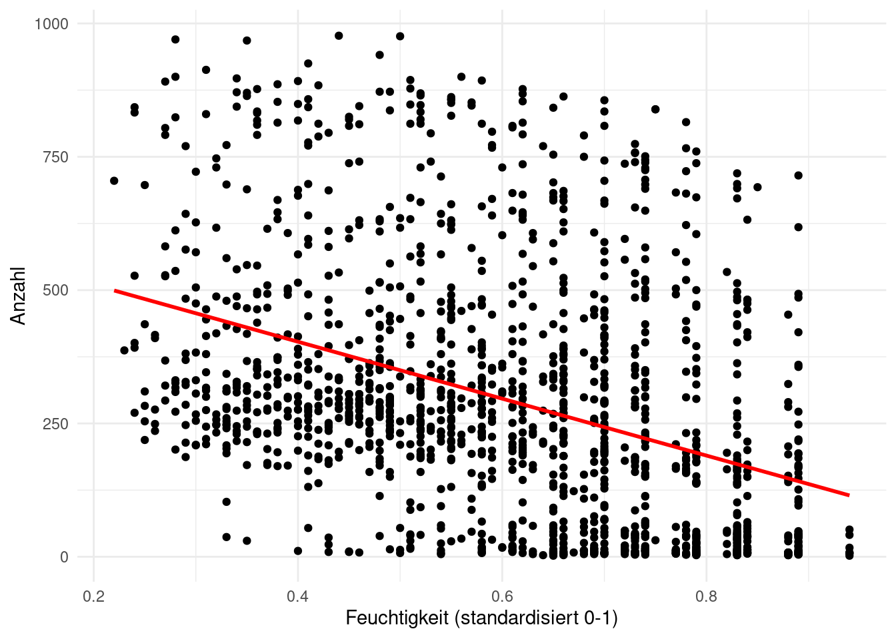
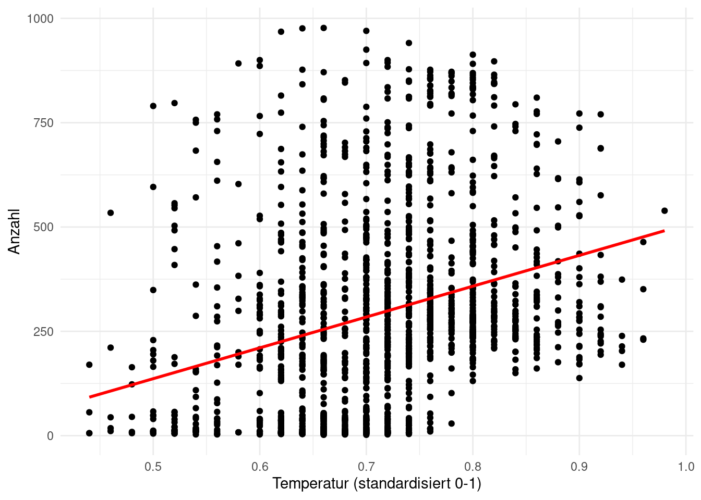
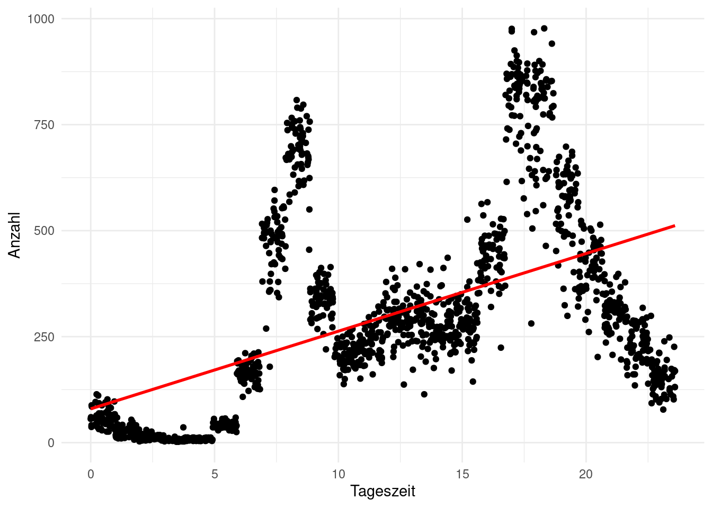

1.2 Statistische Prädiktionsanalyse
Die einzelnen Prädiktorvariablen werden gerne kompakt zu einer multivariaten Prädiktorvariablen \(X=(X_1,X_2,\dots,X_p)\) zusammengefasst; in unserem Benzinverbrauchsbeispiel also \(X=(G,P,H,B)\). So lässt sich das allgemeines Regressionsmodell schreiben als \[ Y=f(X)+\varepsilon \] wobei
- \(f\) den systematischen Zusammenhang zwischen der Zielvariable \(Y\) und den Prädiktorvariablen \(X\) beschreibt und
- \(\varepsilon\) ein Fehlerterm ist, der unabhängig von \(X\) ist und Mittelwert \(E(\varepsilon)=0\) Null hat.
Daraus ergibt sich folgender Zusammenhang zwischen der allgemeinen Regressionsfunktion \(f\) und dem bedingten Mittelwert von \(Y\) gegeben \(X\): \[ E(Y|X)=f(X) \]
Abbildung 1.2 zeigt ein Beispiel von \(50\) simulierten Daten (künstlich erzeugte Fake-Daten). Der Plot legt nahe, dass man das Einkommen mit Hilfe der Ausbildungsjahre vorhersagen kann. Normalerweise ist die wahre Funktion \(f\), welche die Verbindung zwischen \(Y\) und \(X\) beschreibt, unbekannt und muss aus den Daten geschätzt werden. Da es sich hier um simuliete Daten handelt, können wir den Graph der Funktion \(f\) als blaue Linie plotten. Einige der \(50\) Beobachtungenspunkte \((X,Y)\) liegen über der Regressionsfunktion \(f(X)\), andere darunter. Im Großen und Ganzen haben die Fehlerterme einen Mittelwert von Null.Abbildung 1.2: Simulierte (künstlich erzeugte) Daten zur Veranschaulichung einer allgemeinen, univariaten Regressionsbeziehung.

Abbildung 1.3: Veranschaulichung einer allgemeinen, bivariaten Regressionsbeziehung.
1.2.1 Prädiktion
In vielen Datenproblemen sind zwar die Prädiktorvariablen \(X\) bekannt (z.B. Gewicht, PS, Hubraum, Beschleunigung eines neuen Autos), aber die dazugehörige Zielvariable \(Y\) unbekannt. Da sich der Fehlerterm zu Null mittelt, lässt sich in solch einem Fall das unbekannte \(Y\) durch \[ \hat{Y}=\hat{f}(X) \] vorhersagen, wobei
- \(\hat{f}\) für unsere Schätzung von \(f\) steht und
- \(\hat{Y}\) die Vorhersage von \(Y\) für gegebene Prädiktorvariablen \(X\) ist.
Die Genauigkeit der Vorhersage von \(\hat{Y}\) für \(Y\) hängt von zwei verschiedenen Größen ab:
- Reduzierbaren Fehler aufgrund des Schätzfehlers in \(\hat{f}\approx f\). Eine genauere Schätzung kann diesen Fehler reduzieren.
- Nicht reduzierbarern Fehler aufgrund des Fehlerterms \(\varepsilon\). Das ist der Fehler, den wir selbst bei perfekter Schätzung von \(f\) nicht reduzieren können.
müssen wir die unbekannte Regressionsfunktion \(f(X)=E(Y|Y)\) aus den beobachteten Daten schätzen. Da sich die Fehlerterme zu Null mitteln, lässt sich
1.2.2 Vom allgemeinen zum linearen Regressionsmodell
So kann der Datensatz eingelesen werden:
bike_df <- read_csv(file = "data/Bike-Sharing-Dataset/BikeSharing.csv")| Anzahl | Feuchtigkeit (standardisiert 0-1) | Temperatur (standardisiert 0-1) | Tageszeit |
|---|---|---|---|
| 69 | 0.70 | 0.74 | 0.43 |
| 18 | 0.79 | 0.72 | 1.21 |
| 18 | 0.79 | 0.72 | 2.05 |
| 11 | 0.74 | 0.72 | 3.79 |
| 12 | 0.84 | 0.70 | 4.16 |
| 40 | 0.84 | 0.70 | 5.89 |
Es gibt einen negativen Zusammenhang zwischen der nachgefragten Anzahl und der Feuchtigkeit: 
Außerdem gibt es einen schwach Zusammenhang zwischen der nachgefragten Anzahl und der Temperatur: 
Zusammenhang zwischen der nachgefragten Anzahl und der Tageszeit: 